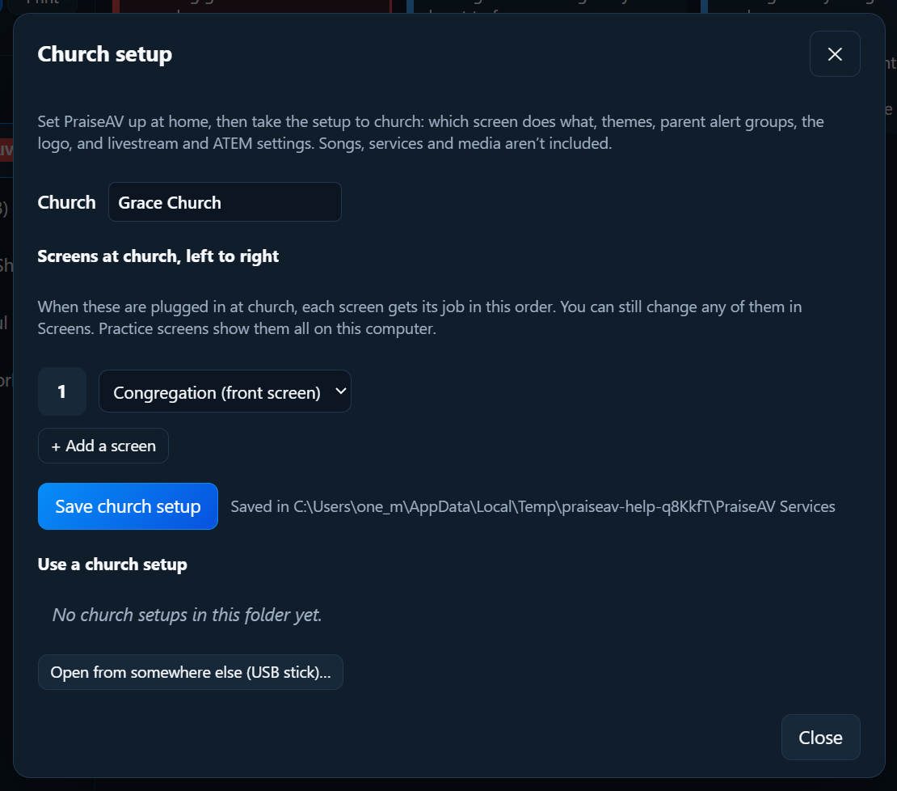

Looking after PraiseAV
Church setup
The person who looks after AV can set everything up at home, then take it to the church computer in one file. It’s also how two computers (say, the main one and a spare) are kept the same.
What it includes
- Which screen does what, in order (front projector, back wall TV…).
- Themes, and which theme songs, Bible verses and sermons use.
- Parent alert groups and wording.
- The church logo, and the corner and print logos if you chose them.
- What the preacher’s screen shows, and how big.
- Livestream and ATEM settings, transitions, Bible options, CCLI licence number.
It doesn’t include songs, services or media. Those go with services and backups.
Saving a church setup
- Click Screens…, then Church setup….
- Type the church’s name.
- Under Screens at church, left to right, list the screens the church has: for example Congregation (front screen), then Preacher (back wall). + Add a screen adds another.
- Click Save church setup.

It’s saved in the same folder as your services, so if that’s OneDrive or Google Drive (see Services), the church computer sees it by itself.
Using it on the church computer
- Click Screens…, then Church setup….
- Under Use a church setup, click the church’s setup. Or Open from somewhere else (USB stick)….
- PraiseAV asks first, because it replaces this computer’s themes, alert groups, logo and screen jobs. Songs, services and media aren’t changed.
When the screens are plugged in, each gets its job in the order you listed. You can still change any of them in Screens….